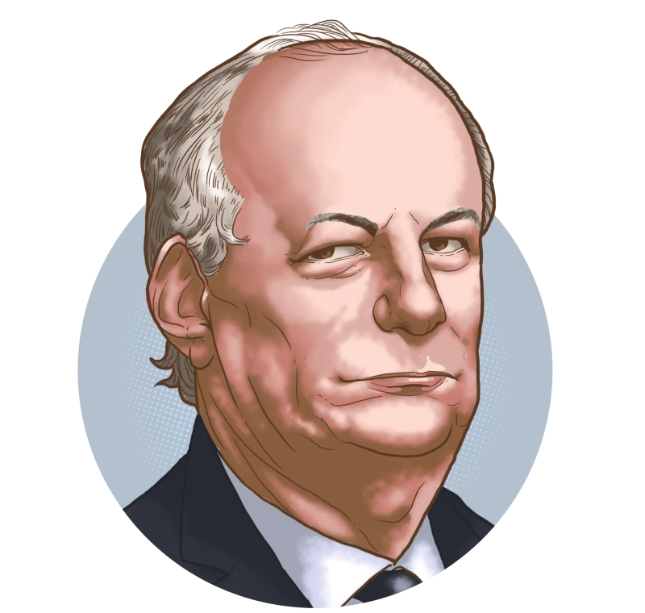

Qual a experiência de Ciro Gomes?
Deputado estadual (1983-1988)
Ciro disputou sua primeira eleição em 1982, para deputado estadual, tendo sido o deputado estadual mais votado na cidade de Sobral, onde obteve 11 600 votos. Foi candidato pelo Partido Democrático Social (PDS), que era o partido do pai. Defendeu nesta eleição o "voto camarão": recomendava vereadores, prefeitos e deputados, mas o voto em branco para senador e governador. Posteriormente, afirmou que nunca pertenceu à Aliança Renovadora Nacional (ARENA) e só se filiou ao PDS para não entrar na política contra seu pai, que era prefeito e "estava em marcha sua sucessão"
Prefeito de Fortaleza
Ciro assumiu a prefeitura da capital cearense em janeiro de 1989. De acordo com o jornal O Estado de São Paulo, a gestão anterior deixou uma herança pesada, com serviços públicos paralisados, mas, de acordo com a mesma reportagem, em um ano ele reconstruiu a cidade. Colocou em funcionamento os serviços de limpeza e manutenção viária, de saúde e educação, além de pagar em dia o salário dos mais de 20 mil funcionários da cidade. Obteve, no ano seguinte, o melhor índice de aprovação entre todas as prefeituras das capitais brasileiras, atingindo 77% de ótimo/bom, de acordo com a Folha de S.Paulo. Ainda em seu mandato, implantou o primeiro IPTU progressivo do Brasil. Porém, com apenas 15 meses à frente da sua administração, deixou o cargo para se candidatar ao Governo do Estado no final de 1990, pelo PSDB, partido que havia sido recém criado. Foi eleito no primeiro turno com 56% dos votos e saiu vencedor em todas as urnas de Fortaleza. Foi o único governador eleito pelo PSDB naquele ano
Governador do Ceará
Em 1990, foi eleito governador do Ceará, vencendo Paulo Lustosa. Foi o primeiro governador a ser eleito pelo PSDB e tornou-se o segundo mais jovem governador do país na época. Ciro assumiu o governo do Estado do Ceará em março de 1991. Foi um incentivador da criação de micro e pequenas empresas no estado, e deu prosseguimento a redução da máquina administrativa, iniciado na gestão de Tasso. Também combateu a sonegação de impostos e aumentou a arrecadação estadual. Sua gestão o transformou no mais popular dos governadores do Brasil, com 74% de aprovação de acordo com o Datafolha, em pesquisa de julho de 1992, e foi relacionado pela revista Time como uma das 100 lideranças emergentes no cenário mundial
Ministro da Fazenda (1994-1995)
Em setembro de 1994, Ciro assumiu o Ministério da Fazenda do governo Itamar Fra, substituindo Rubens Ricupero que foi flagrado no Escândalo da parabólica.[49][50] Como ministro, uma de suas medidas foi a redução da tarifa de importação de 445 produtos.
Primeira candidatura à presidência (1998)
Foi membro do PSDB até 1996, quando filiou-se ao recém-criado PPS em setembro de 1997 (do antigo Partido Comunista Brasileiro, presidido por Roberto Freire - fundado em 19 de março de 1992), para concorrer à presidência da República em 1998. As eleições de 1998 foram as primeiras eleições que permitiam a reeleição, além de já vir acompanhada de uma crise econômica grave, estimulada pelo equilíbrio dos preços do Plano Real. De acordo com relato do jornalista Vicente Gentilli, em 1998, Fernando Henrique e a grande imprensa “uniram-se para evitar todo debate e os jornais praticaram um jornalismo anódino, insosso e inodoro”. Ainda segundo o jornalista, a imprensa decidiu não abriu discussões sobre programas de cada candidato, suas vantagens e desvantagens
Ministro da Integração Nacional (2003-2006)
Escolhido por Lula para comandar o Ministério da Integração Nacional, Ciro tinha como objetivo algumas tarefas de infraestrutura, principalmente na área de infraestrutura hídrica, mas a grande tarefa era articular iniciativas de todas as esferas do governo, visando equilibrar o desenvolvimento desigual no território brasileiro àquela época. As principais ações de Ciro Gomes frente ao Ministério foram a revitalização da SUDENE e da SUDAM, e avançar com a transposição do rio São Francisco. Ainda em seu primeiro ano à frente do ministério, Ciro foi admitido pelo presidente Lula à Ordem do Mérito Militar no grau de Grande-Oficial especial.
Deputado federal (2007-2010)
Em outubro de 2006, Ciro foi candidato a deputado federal pelo PSB. Elegeu-se o deputado proporcionalmente mais votado do país, com 667 830 votos. Em valores absolutos, foi o segundo mais votado no país, ficando atrás apenas de Paulo Maluf. Durante a legislatura, Ciro participou com destaque no começo da legislatura das articulações para eleição de presidente da Câmara dos Deputados. Na época, Ciro apoiou Aldo Rebelo (PCdoB-SP). O PT e o PMDB lançaram o nome de Arlindo Chinaglia (PT-SP), e PSDB lançou Gustavo Fruet (PSDB-PR), com o apoio da oposição. Chinaglia venceu no segundo turno.
Secretário de Saúde do Ceará (2013-2015)
Em 9 de setembro de 2013, Ciro foi nomeado secretário estadual de Saúde do Ceará pelo seu irmão e então governador Cid Gomes. Sobre uma possível prática de nepotismo, o STF já havia se manifestado quatro anos antes, decidindo que poderia ser mantido no cargo de Chefe de Gabinete do Executivo, Ivo Gomes, um outro irmão também nomeado por Cid Gomes na época. Segundo a Justiça cearense, a nomeação de Ciro Gomes, assim como a anterior, não contrariaria a Súmula Vinculante n.º 13, com a nomeação de parente para o exercício de cargo eminentemente político. Em setembro de 2015, Ciro assumiu novamente a Secretaria Estadual de Saúde do Ceará, no governo de Camilo Santana.
